Vývoj typů písma
Historie typů písma je cestou skrze kulturu, technologii a
umělecký výraz. Od pečlivých serifů renesančního tisku po čisté
linie moderních digitálních fontů, typy písma formovaly způsob,
jakým čteme a interpretujeme svět kolem nás.
Rané písmo odráželo ručně psané texty, zatímco industrializace
dala vzniknout výrazným slab serifům a jednoduchým sans serifům
pro masovou komunikaci. V digitálním věku typografie spojuje formu
i funkci, s rodinami fontů navrženými pro srozumitelnost, emoce a
identitu značky napříč obrazovkami i tiskem.
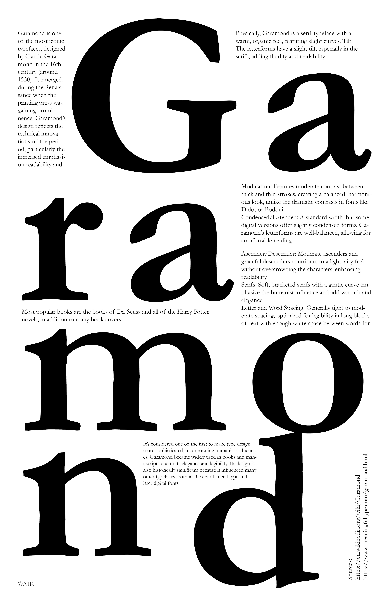
Garamond: Klasické knižní písmo
Garamond byl navržen v 16. století Claudem Garamondem a později
obnoven mnoha typografy. Odráží eleganci a rovnováhu
renesančních tvarů písmen a často se používá v knihách, včetně
série Harry Potter a knih Dr. Seusse. Symbolizuje tradici,
eleganci a sofistikovanost.
V praxi: knihy Harry Potter, Dr. Seuss, původní logo Google,
Abercrombie & Fitch, reklamní kampaň Apple Think Different.
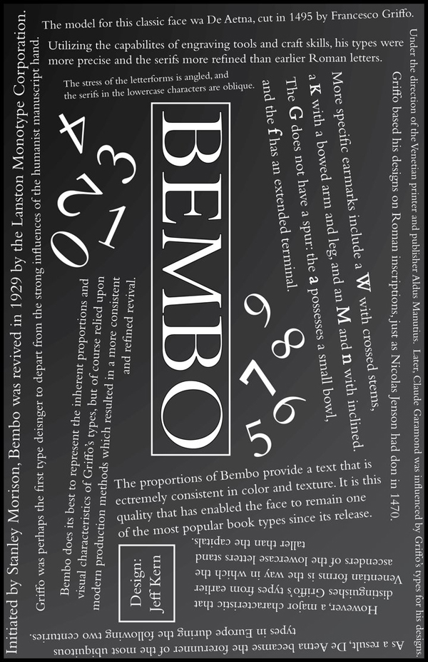
Bembo: Renesanční obnova
Bembo vychází z písma používaného Aldem Manutiem v roce 1496 a
bylo obnoveno společností Monotype v roce 1929. Má klasickou,
elegantní formu ideální pro knižní typografii, nabízí skvělou
čitelnost a krásu tisku.
V praxi: Oxford University Press, Penguin Classics, akademické
vydavatelství.
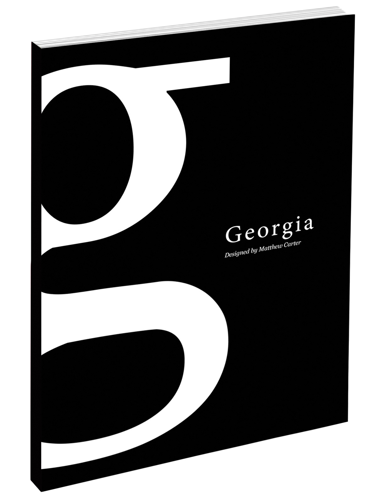
Georgia: Elegance přátelská k obrazovkám
Georgia byla navržena Matthew Carterem v roce 1993 pro
Microsoft. Je to serifové písmo optimalizované pro čitelnost na
obrazovkách s dostatečným prostorem a pevnými tvary, ideální pro
digitální použití a čitelné i v malých velikostech.
V praxi: web New York Times, výchozí fonty Windows/Mac, blogy a
zpravodajské stránky.
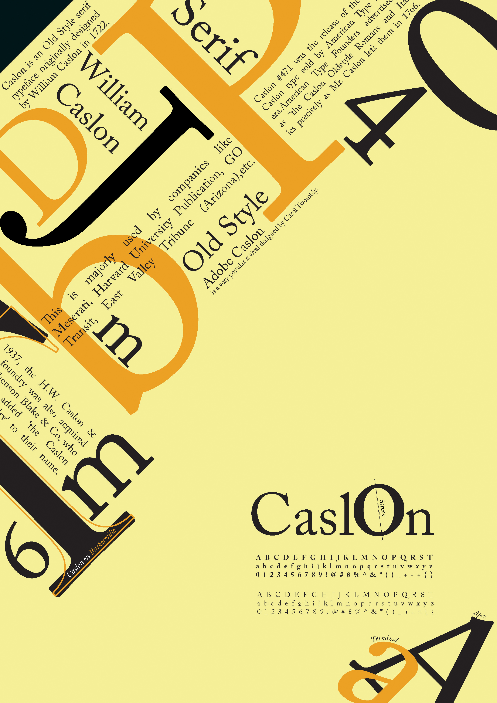
Caslon: Anglická klasika
Navrženo ve 20. letech 18. století Williamem Caslonem, toto
starobylé serifové písmo je známé svými teplými a čitelnými
tvary. Používáno v mnoha historických dokumentech, včetně
Deklarace nezávislosti USA.
V praxi: klasický knižní tisk, formální pozvánky, redakční
design.
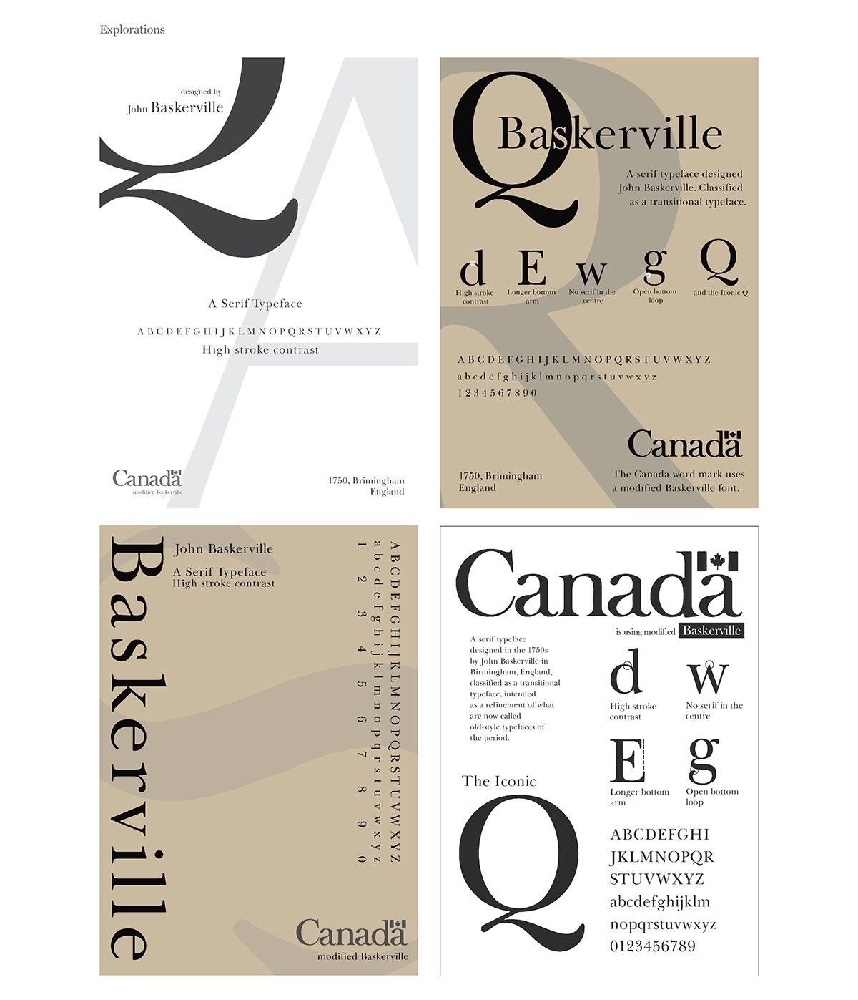
Baskerville: Preciznost a elegance
Vytvořeno Johnem Baskervillem v roce 1757, toto přechodové
serifové písmo zavedlo ostřejší kontrasty a jemnější strukturu,
odrážející osvícenské ideály jasnosti a rozumu.
V praxi: obaly literatury, akademické publikace, luxusní
branding.
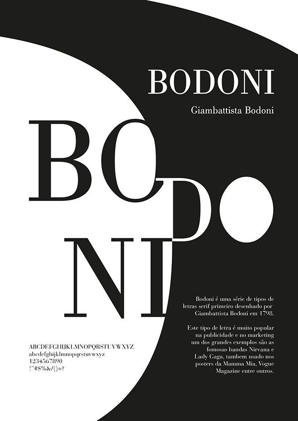
Bodoni: Glamour s vysokým kontrastem
Navrženo Giambattistou Bodonim koncem 18. století, Bodoni má
extrémní kontrast mezi tlustými a tenkými tahy, což mu dodává
vytříbený a dramatický styl.
V praxi: módní časopisy, elegantní branding, italský design.
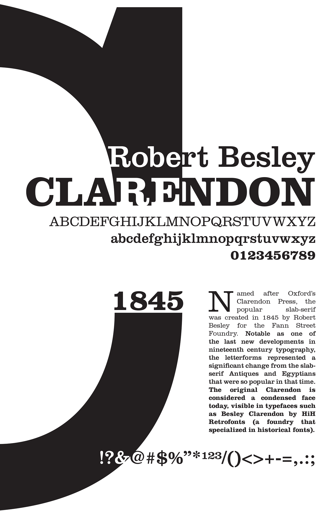
Clarendon: Klasika slab serifů
Navrženo Robertem Besleym v roce 1845, Clarendon bylo jedním z
prvních registrovaných písem. Jeho tučné, zaoblené serify jsou
ideální pro plakáty, titulky a zdůraznění. Vyznačuje se
robustním, retro pocitem.
V praxi: plakáty hledaných osob, značení, branding s historickou
atmosférou.
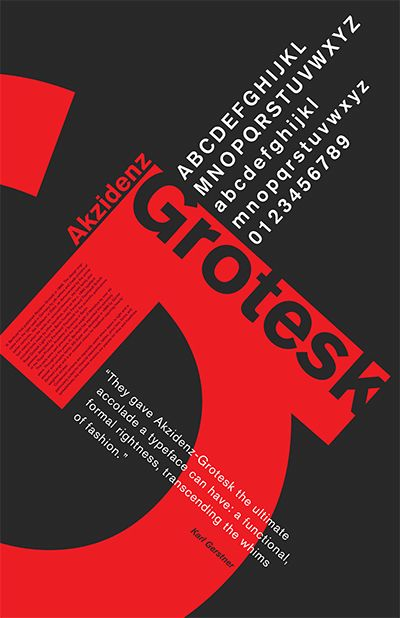
Akzidenz Grotesk: Průkopnické sans serif
Vytvořeno v roce 1896 firmou H. Berthold AG, Akzidenz Grotesk je
považováno za předchůdce moderních sans serifů. Ovlivnilo mnoho
pozdějších fontů, včetně Helveticy. Známé svou neutrální a
funkční podobou, nastavilo základ 20. století typografie.
V praxi: švýcarské designové plakáty, publikace Bauhausu,
minimalistický branding.
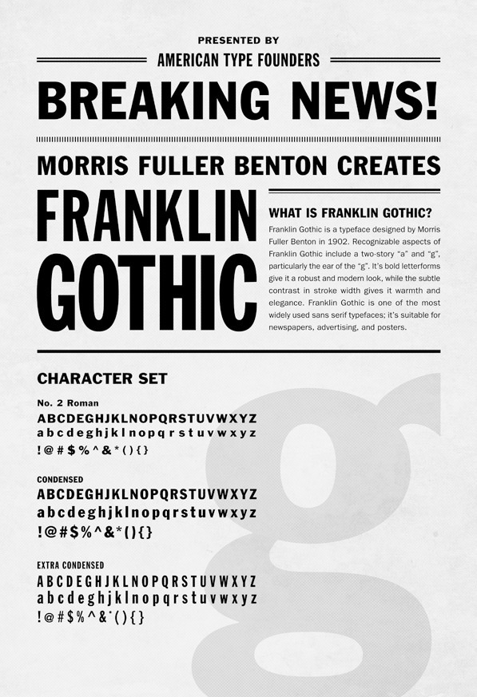
Franklin Gothic: Americká síla
Vytvořeno Morrisem Fullerem Bentonem v roce 1902, Franklin
Gothic je silný, nekompromisní sans serif, který vyjadřuje
odvahu a autoritu, přitom je velmi čitelný.
V praxi: titulky novin, reklama, politické plakáty.
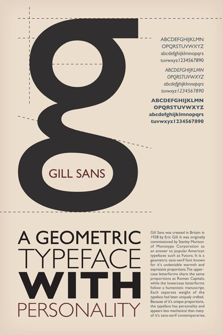
Gill Sans: Britský humanismus
Navrženo Ericem Gillem v roce 1928, Gill Sans je humanistický
sans serif s klasickými proporcemi. Vyvažuje teplo a modernost,
často považován za britskou odpověď na geometrické sans serify.
V praxi: branding BBC, British Railways, obaly knih Penguin.
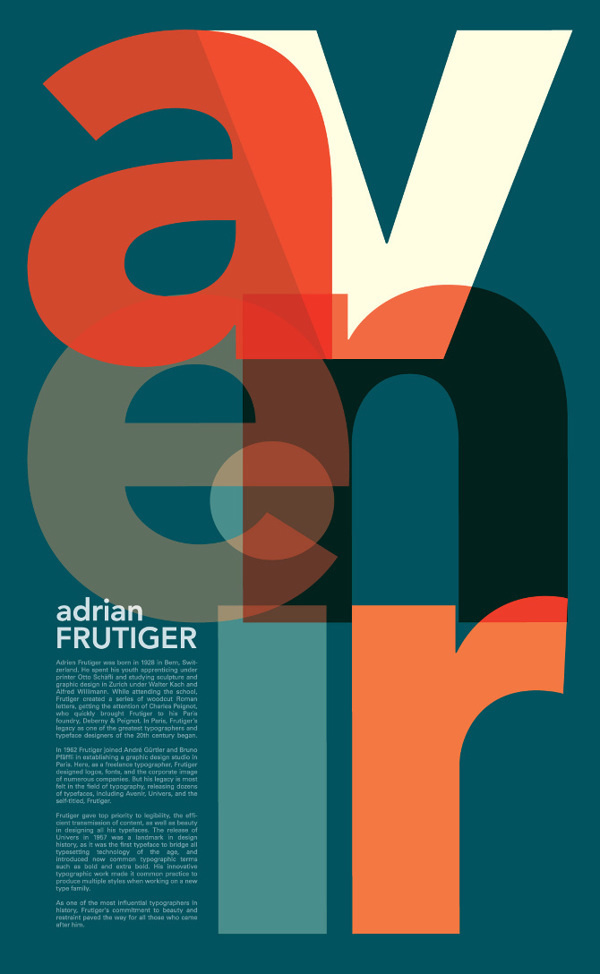
Avenir: Geometrický humanista
Navržen Adrianem Frutigerem v roce 1988, Avenir spojuje
geometrický styl Futura s humanistickými prvky pro lepší
čitelnost. Je široce používán pro svůj čistý, ale přitom teplý
vzhled a je univerzální pro tisk i digitální formáty.
V praxi: Apple Maps, Disney+, evropské značení, branding a UI
design.
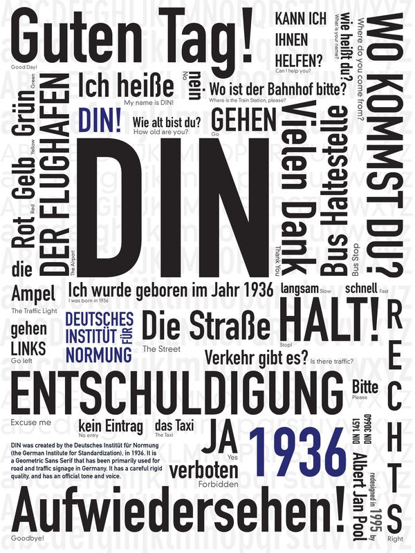
DIN: Průmyslový standard
DIN 1451 byl vyvinut v Německu v 30. letech 20. století pro
dopravní značky a techniku. Je velmi čitelný a působí mechanicky
a přesně. Později upravený na FF DIN pro komerční použití, je
známý svou funkční a moderní estetikou.
V praxi: německé dopravní značky, dokumenty NASA, branding
Spotify, současný redakční design.
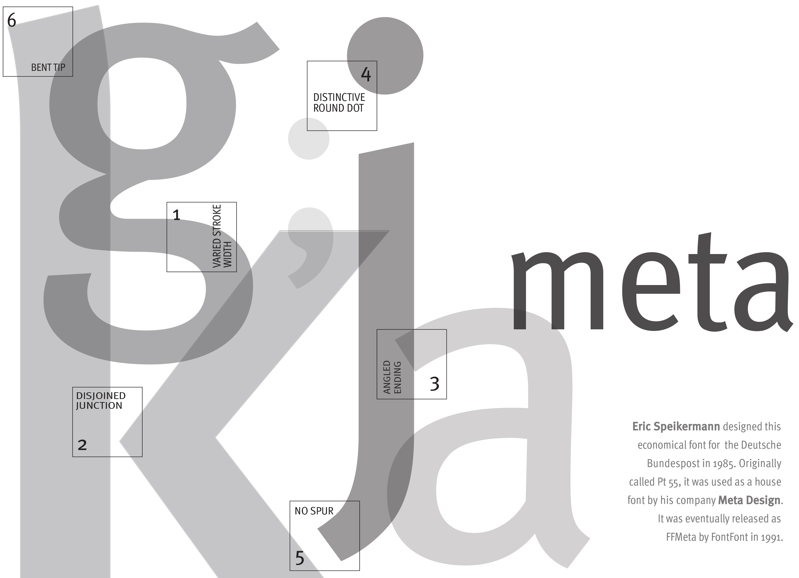
Meta: Humanistické korporátní písmo
Navržen Erikem Spiekermannem v 90. letech, Meta je humanistické
sans serif písmo vyvinuté pro Deutsche Post. Zdůrazňuje
čitelnost, osobitost a efektivitu, což z něj činí oblíbenou
volbu pro branding a redakční použití.
V praxi: Deutsche Post, Office of Fair Trading (UK), branding a
designové systémy po celém světě.
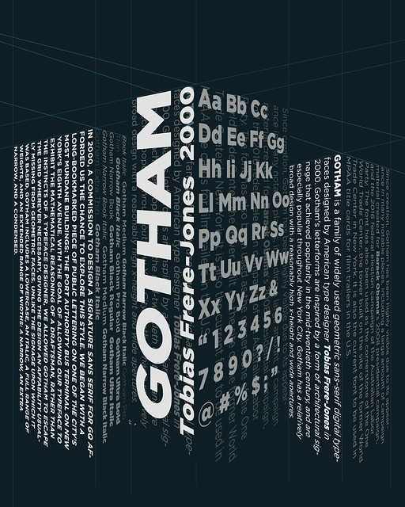
Gotham: Americký hlas
Navržen Tobiasem Frere-Jonesem v roce 2000, Gotham byl
inspirován newyorským značením. Jeho odvážná, čistá geometrie
získala popularitu v politice, zejména během Obamovy kampaně v
roce 2008, a stal se oblíbeným pro moderní branding.
V praxi: Obamova kampaň, Spotify, časopis GQ, základní kámen One
World Trade Center.
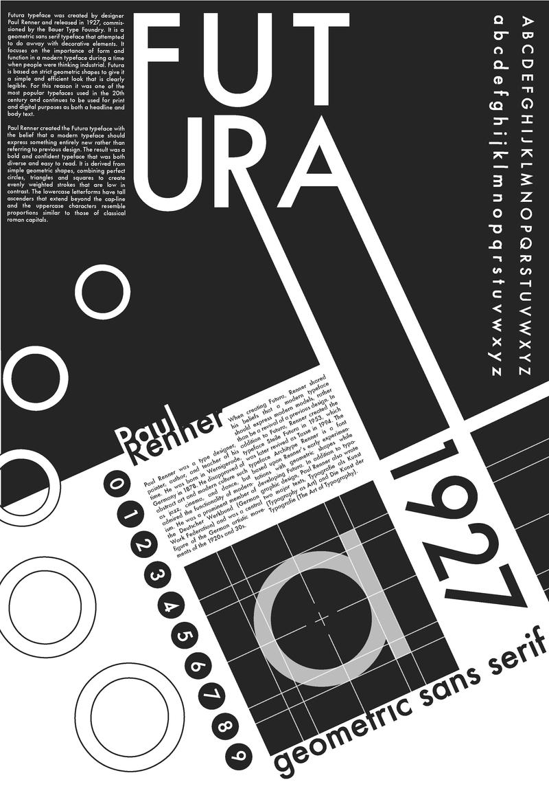
Futura: Geometrický modernista
Futura byla navržena Paulem Rennerem v roce 1927 jako odraz
ideálů Bauhausu. Používá jednoduché geometrické tvary a
minimální tahy. Je široce používána pro svůj nadčasový, čistý
vzhled a modernistickou přitažlivost.
V praxi: IKEA (minulý branding), plaketa NASA na Měsíci,
Supreme, Volkswagen.
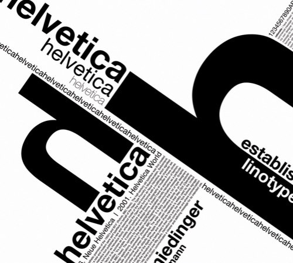
Helvetica: Globální neutrální
Navržena Maxem Miedingerem v roce 1957, Helvetica je jedno z
nejpoužívanějších písem na světě. Její čistý, neutrální design
zosobňuje švýcarský modernismus a je známá svou jasností a
univerzálností v designu.
V praxi: metro v NYC, Lufthansa, American Apparel, nespočet log
a uživatelských rozhraní.
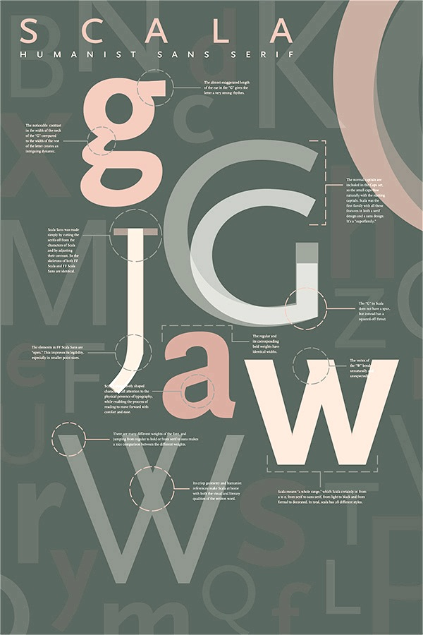
Scala Sans: Elegantní společník
Navržena Martinem Majoorem v roce 1993, Scala Sans je sans-serif
doprovod k serifovému písmu Scala. Zachovává klasické proporce a
byla jednou z prvních digitálních superrodin písem navržených
pro redakční použití.
V praxi: nizozemské kulturní instituce, akademické publikace,
muzea a designové časopisy.